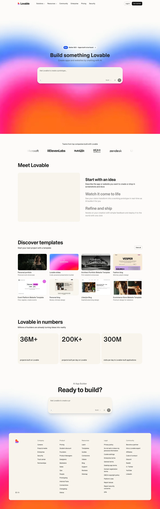

Lovable 主题
Lovable 的 Design.md 主题展示，围绕AI、媒体内容、趣味互动、SaaS 产品组织页面。
AI full-stack builder. Playful gradients, friendly dev aesthetic.
AI媒体内容趣味互动SaaS 产品开发工具浅色界面B2B 产品效率工具专业工具

来源
- 来源
- getdesign.md
- 镜像
- github:VoltAgent/awesome-design-md
- 网站
- https://lovable.dev/
- 详情
- https://getdesign.md/lovable/design-md
色板
#f7f4ed: #f7f4ed#a0a0a0: #a0a0a0#000000: #000000#fbbf24: #fbbf24#8a8a8a: #8a8a8a#0a0a0a: #0a0a0a#e0e0e0: #e0e0e0#ffffff: #ffffff
字体
display: Interbody: Intermono: ui-monospacehints: Inter,ui-monospace
圆角
control: 7pxcard: 7pxpreview: 7pxpill: 9999pxsource: design-md
间距
xxs: 48pxxs: 60pxsm: 0.9pxmd: 1.5pxlg: 3.00remxl: 1.2pxxxl: 8pxxxxl: 16pxsection: 80pxsection-lg: 208pxhero: 96pxband: 24pxspace-13: 1pxspace-14: 600pxspace-15: 36pxspace-16: 128pxsource: design-md
使用建议
建议
- 建议：Use the warm cream background ({#f7f4ed}) as the page foundation — it's the brand's signature warmth。
- 建议：Use Camera Plain Variable at display sizes with negative letter-spacing (-0.9px to -1.5px)。
- 建议：Derive all grays from {#1c1c1c} at varying opacity levels for tonal unity。
- 建议：Use the inset shadow technique on dark buttons for tactile depth。
- 建议：Use {#eceae4} borders instead of shadows for card containment。
避免
- 避免：use pure white ({#ffffff}) as a page background — the cream is intentional。
- 避免：use heavy box-shadows for cards — borders are the containment mechanism。
- 避免：introduce saturated accent colors — the palette is intentionally warm-neutral。
- 避免：use weight 700 (bold) — 600 is the maximum weight in the system。
- 避免：apply 9999px radius on rectangular buttons — pills are for icon/action toggles。
查看 DESIGN.md